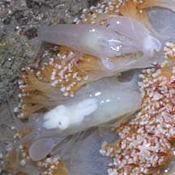

|
|
| shrimps text index | photo index |
| Phylum Arthropoda > Subphylum Crustacea > Class Malacostraca > Order Decapoda |
| Prawns
and shrimps updated Apr 2020
Where seen? Among our favourite seafood, prawns and shrimps come in various sizes and colours. Close observation is needed to appreciate their delicate patterns and colours, and amusing behaviour. Prawns and shrimps are common on almost every shore. However, they are difficult to spot as they are often small, and hide in burrows or just beneath the sand. Even those in plain sight disappear from view as many are nearly transparent. They are adapted for bottom dwelling. What are prawns and shrimps? Prawns and shrimps are crustaceans that belong to various groups in the larger Order Decapoda. There are no clear scientific differences between prawns and shrimps. Generally, smaller ones are called shrimps while larger ones prawns. Features: Usually less than 5cm long. Unlike crabs which have stiff shells to protect their abdomen, a shrimp has a thin, flexible shell over a long abdomen that ends in a broad fan-like tail. A quick contraction of the muscular abdomens propels the shrimp backwards. To swim slowly, the shrimp paddles with the small swimmeretes (pleopods) under the abdomen. Many shrimps are transparent, blending in wherever they are. Some may be red, a colour that is hard to distinguish in the dark or in deeper water. What do they eat? Larger shrimps are mostly scavengers or eat small plants and animals. Smaller ones feed on plankton and algae. |
 The Blue-tail prawn like other shrimps contracts its abdomen to swim backwards. |
 Red-nose shrimps are also found among seaweeds, and living hard and soft corals. |
 A tiny transparent commensal shrimp, several seen on a Thorny sea cucumber. Beting Bronok, Aug 05 |
How do they mate? Shrimps have
separate genders. To mate, a male inserts his sperm packet into a
special receptacle in the female. Fertilisation, however, is external.
The female releases the sperms from the packet together with her eggs.
A female prawn produces a huge number of eggs, as much as one million
in one spawning! Some may carry their eggs under their tails.
|
 White snapping shrimps live in Ball flowery soft corals. Beting Bronok, May 11 |
 A Many-band snapping shrimp sharing a burrow with a Pink-speckled shrimp-goby. Kusu Island, Aug 08 |
 A pair of Five-spot anemone shrimps is commonly found in our carpet anemones. |
| Role in the habitat: Shrimps are
numerous and eaten by a wide variety of larger creatures. In coral
reefs, some species of shrimps act as cleaners, picking parasites
and dead skin off fishes. The fish 'clients' allow the cleaner shrimps
to do their job without eating them. These cleaners are often brightly
marked. Some shrimps also live with other sea creatures. Anemone
shrimps, for example, frolick happily among the tentacles of a
sea anemone that would kill and eat other creatures. Human uses: Shrimps and prawns are relished food by people everywhere. In Asia, shrimps are eaten in many ways. Besides the usual dishes made from whole shrimps, they may also be dried, or made into paste ('belachan') or mixtures ('cincaluk'). Tiny shrimps are used as condiments, and shrimps flavour crackers, balls and other delicacies. While traditional farming and harvesting methods are sustainable, large-scale commercial prawn farms and prawn trawling are more destructive and unsustainable. More about prawn farming and trawling. Status and threats: Some of our shrimps and prawns are listed among the threatened animals of Singapore. However, like other creatures of the intertidal zone, they are all affected by human activities such as reclamation and pollution. Trampling by careless visitors and over-collection can also have an impact on local populations. |
| Some Prawns and Shrimps on Singapore shores |


| Marine
shrimps and prawns recorded for Singapore from Wee Y.C. and Peter K. L. Ng. 1994. A First Look at Biodiversity in Singapore. in red are those listed among the threatened animals of Singapore from Davison, G.W. H. and P. K. L. Ng and Ho Hua Chew, 2008. The Singapore Red Data Book: Threatened plants and animals of Singapore. *from Tan, Leo W. H. & Ng, Peter K. L., 1988, A Guide to Seashore Life **from Lim, S., P. Ng, L. Tan, & W. Y. Chin, 1994. Rhythm of the Sea: The Life and Times of Labrador Beach. +from our observation. ^from WORMS
Infraorder Caridea
Infraorder Stenopodidea
|
Links
|